#6272 Schlacht um Midway
Alternativ: Midway
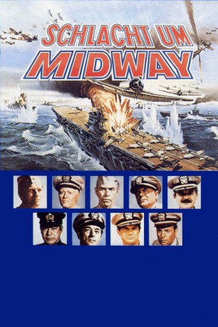 
 IMDB-Wertung: 6.8 / 10
IMDB-Wertung: 6.8 / 10  Metascore: 0
Metascore: 0 
Im Sommer 1942 tobt der Zweite Weltkrieg auch auf dem Pazifik. Auf offenem Meer treffen amerikanische und japanische Truppen aufeinander. Jedoch warten die jeweiligen Flotten ab, dass der Gegner einen ersten Schritt unternimmt. Die Japaner haben es dabei auf die „Midway“-Insel abgesehen und hoffen, dass sie den Amerikaner durch einen Hinterhalt eine schmerzhafte Niederlage zufügen können. Es beginnt ein nervenaufreibender Nervenkrieg auf offener See, bei der keiner der verfeindeten Parteien einen falschen Schritt machen will, denn sie alle wissen, dass diese Schlacht die entscheidende Wendung im Pazifik-Krieg bringen könnte. Besonders der befehlshabende Admiral Chester W. Nimitz pocht auf ein taktisches Vorgehen, um den Japanern einen Schritt voraus zu sein und um nicht noch einmal ein zweites Pearl Harbor erleben zu müssen.
Jahr: 1976
Dauer: 131 Minuten
FSK: 16
Land: USA Studio: Universal PicturesTonspuren:
Untertitel: Deutsch,
Auflösung: 1080p (1920x816) Größe: 10065 MB
Genre: Action, Drama, Krieg, Geschichte
Regisseur: Jack Smight
Drehbuch: Matthew Chapman
Soundtrack:
Darsteller:
 Charlton Heston als Capt. Matt Garth
Charlton Heston als Capt. Matt Garth Henry Fonda als Adm. Chester W. Nimitz
Henry Fonda als Adm. Chester W. Nimitz James Coburn als Capt. Vinton Maddox
James Coburn als Capt. Vinton Maddox- Glenn Ford als Rear Adm. Raymond A. Spruance
 Hal Holbrook als Cmdr. Joseph Rochefort
Hal Holbrook als Cmdr. Joseph Rochefort- 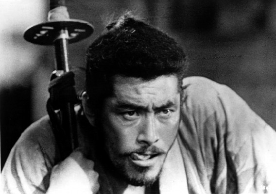 Toshirô Mifune als Admiral Isoroku Yamamoto
- 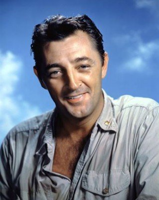 Robert Mitchum als Admiral William F. Halsey
 Cliff Robertson als Commander Carl Jessop
Cliff Robertson als Commander Carl Jessop Robert Wagner als Lieutenant Commander Ernest L. Blake
Robert Wagner als Lieutenant Commander Ernest L. Blake- 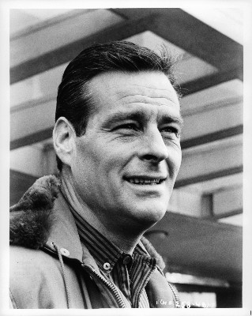 Robert Webber als Rear Admiral Frank J. 'Jack' Fletcher
- Ed Nelson als Admiral Harry Pearson
 James Shigeta als Vice Admiral Chuichi Nagumo
James Shigeta als Vice Admiral Chuichi Nagumo- Monte Markham als Commander Max Leslie
- Biff McGuire als Captain Miles Browning
- 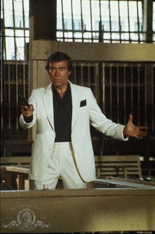 Christopher George als Lieutenant Commander C. Wade McClusky
- Kevin Dobson als Ensign George Gay
- Glenn Corbett als Lieutenant Commander John Waldron
- 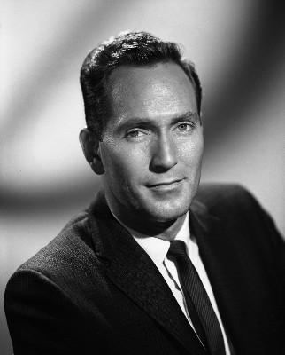 Gregory Walcott als Captain Elliott Buckmaster
- Edward Albert als Lieutenant Tom Garth
 Pat Morita als Rear Admiral Ryunosuke Kusaka
Pat Morita als Rear Admiral Ryunosuke Kusaka- 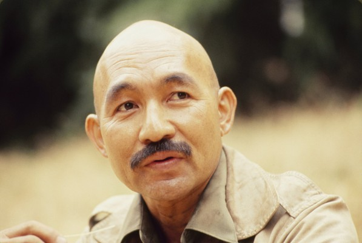 John Fujioka als Rear Admiral Tamon Yamaguchi
- 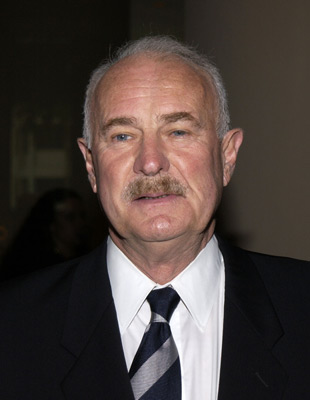 Dabney Coleman als Captain Murray Arnold
- Erik Estrada als Pilot 'Chili Bean' Ramos
- 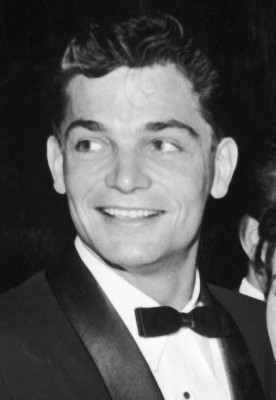 Larry Pennell als Captain Cyril Simard
- 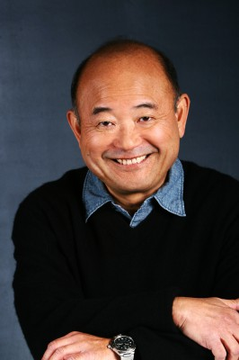 Clyde Kusatsu als Cmdr. Watanabe
- 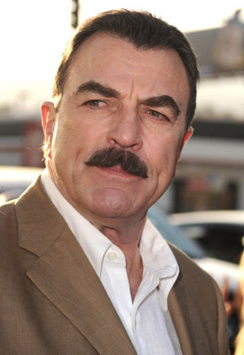 Tom Selleck als Aide to Capt. Cyril Simard
- 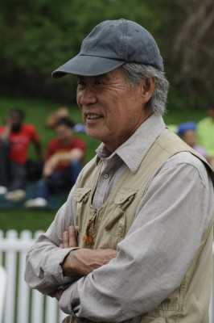 Sab Shimono als Lt. Tomonaga
- 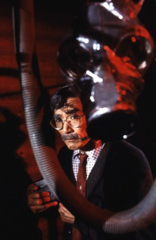 Robert Ito als Cmdr. Minoru Genda
- John Bennett Perry als ARM1c Walter G. Chochalousek
- Steve Kanaly als Lt. Cmdr. Lance E. Lem Massey
- Kip Niven als Lt. Howard P. Ady, PBY Pilot
- Michael Richardson als ARM3c Robert K. Huntington
- Jeff Chamberlain als Sailor , uncredited
- Jesse Dizon als Pilot , uncredited
- Jerry Fujikawa als Japanese Gentleman , uncredited
- Ned Gill als Seaman Downes , uncredited
- 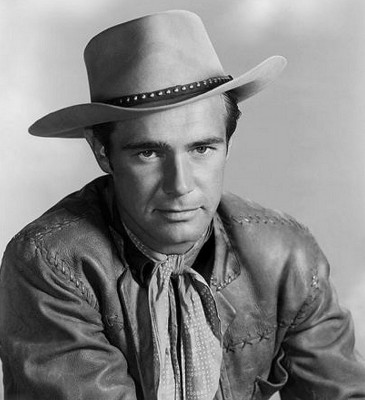 John Lupton als Officer Testing Electric Bomb Release , uncredited
- David Macklin als Lt. Jack Reid , uncredited
- 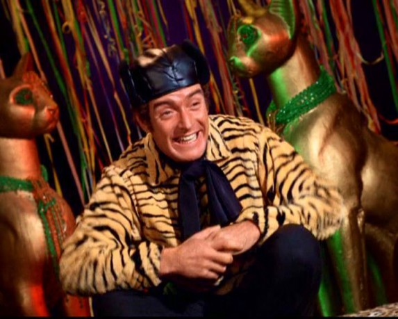 Sandy McPeak als Capt. Thomas , uncredited
- 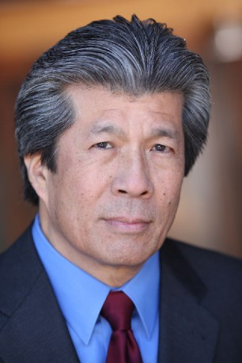 Richard Narita als Lt. Hashimoto , uncredited
- 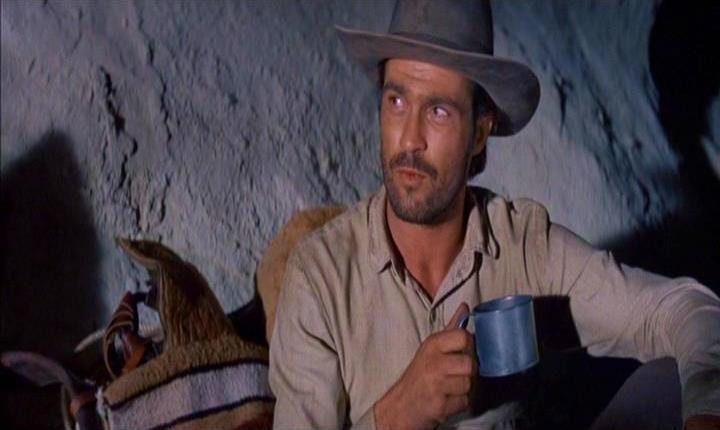 Clint Ritchie als Lt. Cmdr. Charles Fenton , uncredited
 Mitchell Ryan als RAdm. Aubrey W. Fitch , uncredited
Mitchell Ryan als RAdm. Aubrey W. Fitch , uncredited- Richard Sanders als (TV version only , uncredited
- Richard Sarradet als (uncredited
- 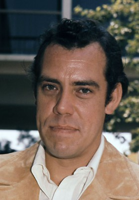 John Schuck als Wilson , uncredited
- Alec Smight als (TV version only , uncredited
- Susan Sullivan als Ann, TV version only , uncredited
- Miiko Taka als (TV version only , uncredited
- Christina Kokubo als Haruko Sakura
- Dale Ishimoto als Vice Admiral Moshiro Hosogaya
Datei: X:\1976\Schlacht um Midway (1976, FSK16, 1920x816).mkv seit 24.05.2017
Festplatte: HD 1971-1979
 Es gibt insgesamt 31 Filme in der Gruppe '1976'
Es gibt insgesamt 31 Filme in der Gruppe '1976'